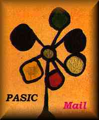
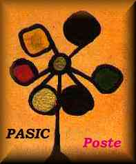
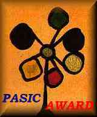
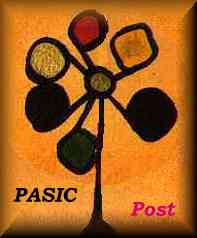
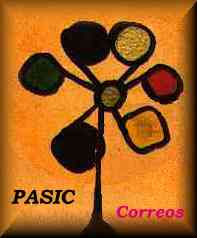

 |
 |
| ENGLISH. The PASIC members reward the best Web sites dedicated to the promotion of Visual Arts (Painting, Sculpture, Decorative Arts, ...) and to the Thematical (Topical) Stamps Collecting. Links to awarded sites will be published on this site. The rewarded Webmasters will be contacted by e-mail. To permit to the site you have chosen to win the award presented below, please fill in the form. The Webmasters may apply too, using the same form. | DEUTSCH. Die PASIC-Mitglieder zeichnen mit einen Preis den besten Webseiten, die sich der Förderung der visueller Kunst (Malerei, Bildhauerkunst, dekorative Kunst, ...), wie auch der Förderung der Motivphilatelie widmen, aus. Diese Seite wird die Verbindungen (Links) zu den Preisgewinner veröffentlichen. Die preisgekronten Webmaster werden per E-Mail kontaktiert. Um den unterstehenden Preis der von Ihnen ausgewählter Webseite gewinnen zu ermöglichen, bitte füllen Sie das Formular aus. Auch die Webmaster dürfen mitmachen. |
| FRANCAISE. Les membres du PASIC récompence par un prix le meilleurs pages Web, qui sont consacré à la promotion des arts visuelles (peinture, sculpture, arts décoratifs, ..) et de la philatelie thèmatique. Des liens vers les pages récompence seront publié sur cette page. Le Webmasters gagnant seront contacté par E-mail. Pour permettre à la page que vous avez choissi de concurrencer pour le prix présenté a droit, remplissé s.v.p. le formulaire en bas de la page. Les Webmasters peuvent aussi participer. | The PASIC Award of Excellence  |
E-mail:
URL::f an
That's why do you reccomend this site (even if you are its author):
 |
 |
Copyright © 1996 - 1998 by Victor Manta. All rights
reserved.
Revised: 01/04/98.